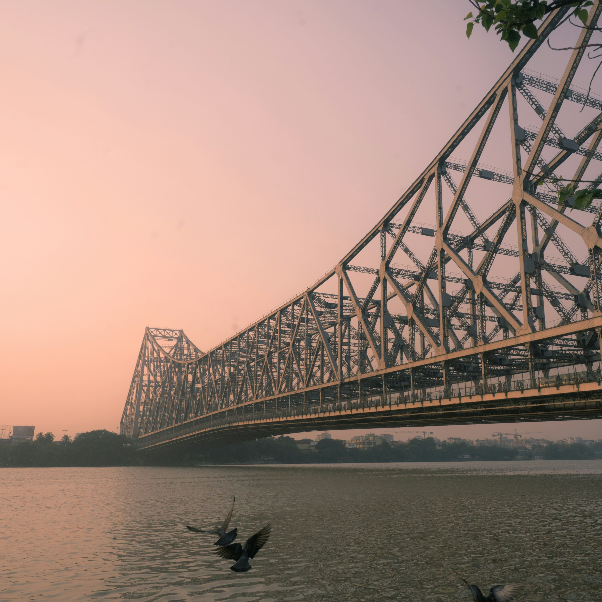
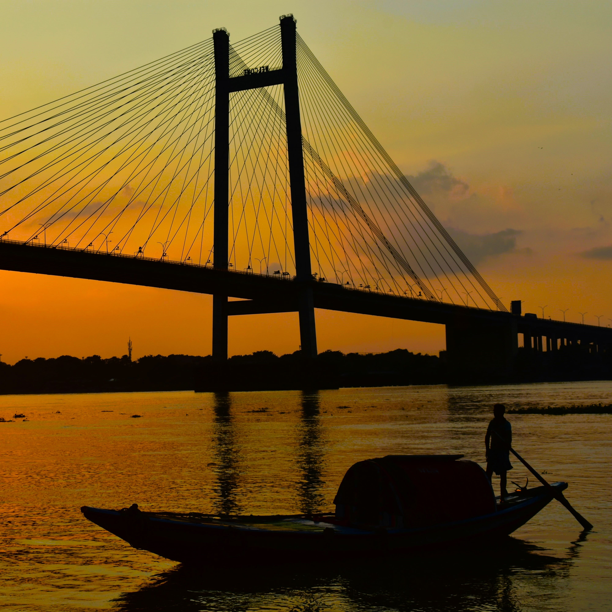

Step into the City of Joy, where grand colonial architecture, historic streetcars and the unmatched warmth of our people welcome you at every corner.
Explore this majestic white marble palace blending British and Mughal architecture.
Step inside to discover a museum rich in Kolkata’s history, or wander through 64 acres of beautifully manicured gardens.

Experience the raw energy of the city by taking a yellow taxi ride across this massive, iconic cantilever bridge.
Built entirely without nuts or bolts, it connects Kolkata with Howrah and serves as the heartbeat of local daily life.

Take a serene cruise along the Hooghly River on a traditional wooden boat.
It offers a breathtaking front-row view of the sun setting right behind the iconic Vidyasagar Setu suspension bridge.
I know these streets like the back of my hand. Let’s skip the tourist traps and discover the real stories, best views and local favorites that most visitors completely miss!